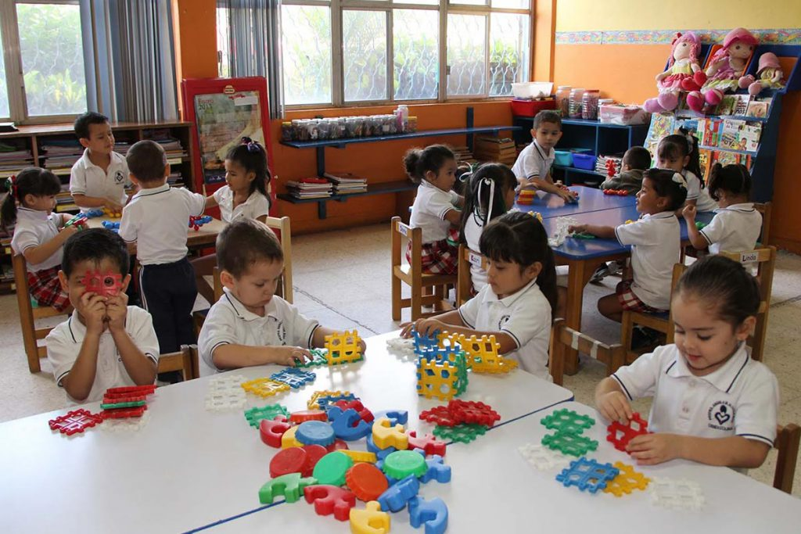
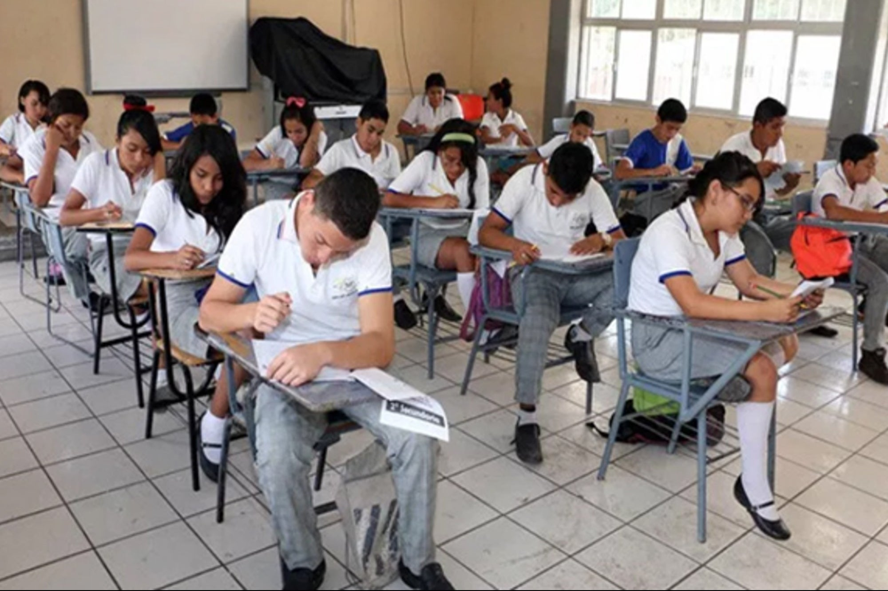
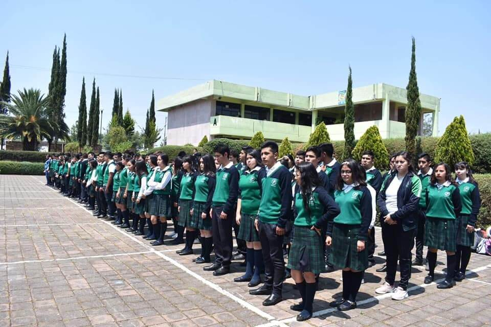

Formación academica
Preescolar
Durante los primeros años de formación escolar los obtuve en el jardín de niños "Alejandro Fleming" que se ubica en Santa Cruz del Monte, Teoloyucan, Estado de México
Primaria
Los siguientes 6 años estudie en la misma zona, pero ahora en la escuela primaria "Emiliano Zapata"
Secundaria
Durante los 3 años de secundaria los curse en ESTIC No.74 "General Alvaro Obregon" ubicada en Zimapan, Teoloyucan, Estado de México
Preparatoria
En la preparatorio sali con un titulo técnico en programación para lo cual ya iba enfocado a lo que realmente me gustaría dedicarme en el futuro. Estos 3 años los pase estudiando en el CECYTEM Plantel Tepotzotlan, Estado de Mexico
Superior
Actualmente estudio en la Escuela Superior de Cómputo, es ahí que curso la carrera de Ingeniero en Sistemas Computacionales. La escuela se ubica en Zacantenco, Ciudad de México